Le logiciel Escape the Shell est un logiciel d'apprentissage des commandes Bash aussi bien pour les néophytes que
pour les connaisseurs, il est dirigé par DevSchool et produit par Le Dodo à Gilles.
Configuration informatique nécessaire
Escape the Shell à pour but de fonctionner sur les systèmes d’exploitation Apple Mac OS X, Microsoft Windows et les
différentes distributions de Linux.
Il est requis pour le fonctionnement du logiciel que le poste informatique possède Java 11 ou une version
supérieure.
Le matériel physique nécessaire à l'utilisation du logiciel est : un écran, une souris, et un clavier.
Installation et désinstallation
Le logiciel Escape the Shell ne requiert pas d'installation, il comporte un fichier compressé .zip qu'il suffit de
décompresser.
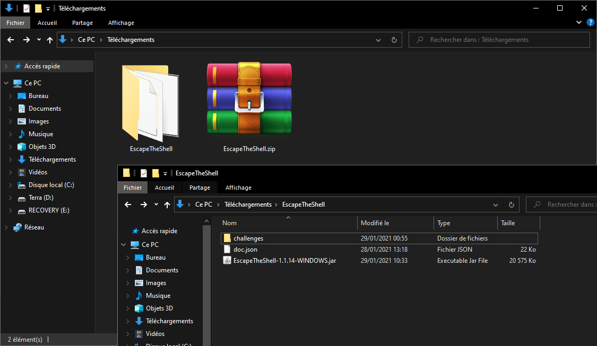
Licence
Le logiciel Escape the Shell est un logiciel propriétaire appartenant à DevSchool.
Notes sur l’utilisation de la souris
Vous contrôlez la totalité des actions à l’aide de la souris, plus particulièrement avec le clic gauche, “Clic
gauche” (ou plus simplement “cliquer”) indique que vous appuyez puis relâchez sur le bouton situé sur le côté gauche
de la souris.
Certains contrôles sont disponible avec le clic droit, de même des raccourcis claviers existent.
Pour commencer
Généralités
Dans cette partie nous allons voir comment exécuter le logiciel et vous montrer les différentes interactions
possibles avec celui-ci.
Lancement du logiciel
Afin d'exécuter le logiciel rendez vous dans le dossier dans lequel vous avez extrait le fichier .zip, et exécutez
le fichier .jar correspondant à votre système d'exploitation.
Une fenêtre va alors s'ouvrir ainsi qu'un pop-up vous demandant de renseigner votre identifiant.
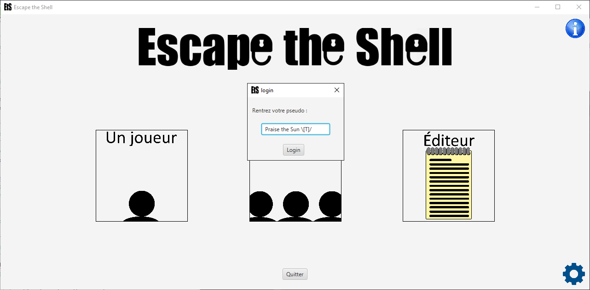
Fenêtre principale et pop-up d’identification
Menu principal
La fenêtre principale propose plusieurs boutons:
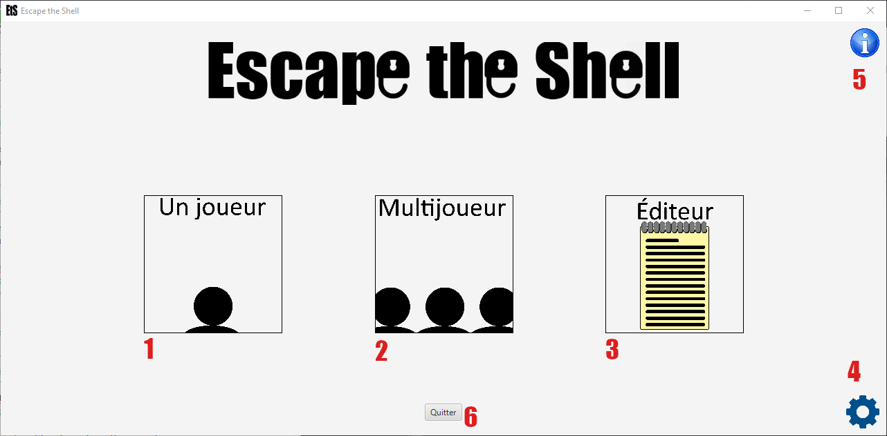
Fenêtre principale
1 - le mode un joueur
2 - le mode multijoueur
3 - l'éditeur de niveaux
4 - le menu des options
5 - le menu d'aide
6 - le bouton de fermeture
Menu des options
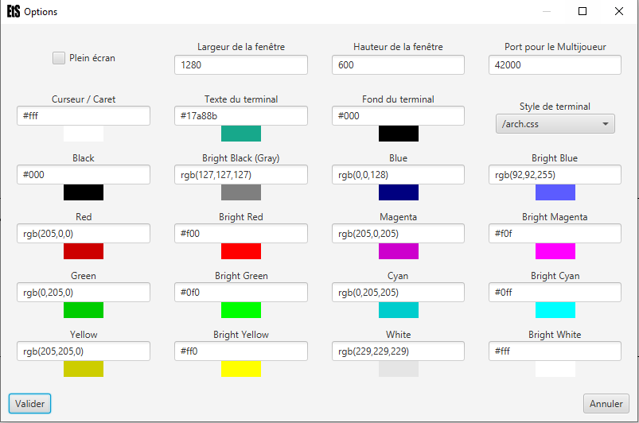
Menu des options
Cette fenêtre permet à l'utilisateur de modifier l'aspect visuel de l'application selon ses préférences et son confort.
Présentations des modes
Dans cette partie nous détaillons le fonctionnement et l'utilisation des différentes modes du logiciel.
Mode "un joueur"
Le mode Un joueur permet à l'utilisateur de se mesurer à différents challenges dans lesquels il doit user des
commandes Unix afin d'explorer un système de fichiers pour trouver un mot-de-passe afin de prendre le contrôle de la
session.
En sélectionnant le bouton Un joueur un nouveau menu s'affiche.
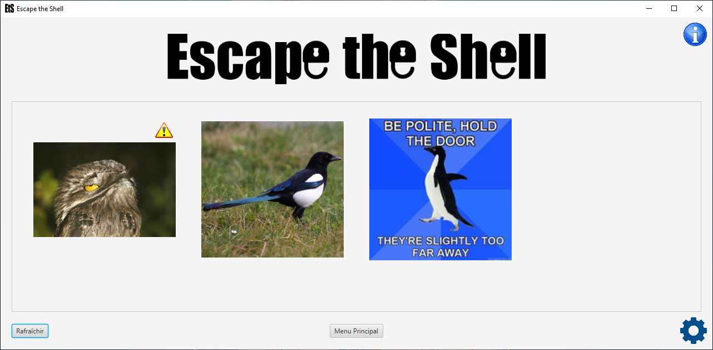
Choix du challenge
Dans celui-ci vous trouverez l'ensemble des challenges présents dans le dossier challenges. Un bouton Menu
principal vous permet de revenir au menu précédent, et le bouton Rafraîchir vous permet de recharger les
challenges en cas de modifications du contenu du dossier challenges.
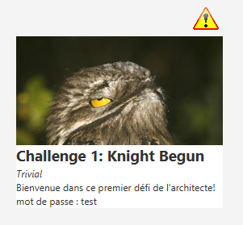
Bandeau d'information du challenge
En passant la souris sur un challenge il apparaît un bandeau informant de divers informations tels que le nom, la
difficulté, et une courte description.
En haut à droite de certain challenge un panneau d'avertissement peut être présent et signifie que le challenge n'a
pas été validé. Pour plus d'information référez vous à la section Mode
"Éditeur".
Pour démarrer un challenge cliquez dessus. L'interface va alors se modifier:
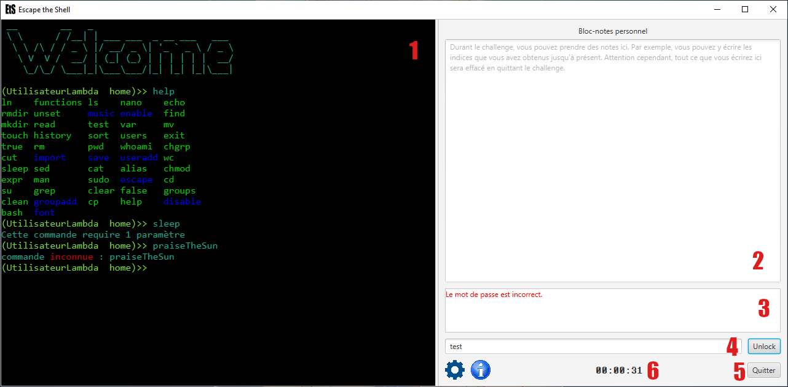
Le challenge est lancé!
Elle est maintenant composée d'une console simulant un terminal Unix dans lequel va se dérouler le challenge
(1), un bloc-note pour l'utilisateur (2) ainsi qu'une zone d'information (3).
Le dernier champ de texte est pour le mot-de-passe qui peut être testé via le bouton Unlock(4).
Le bouton Quitter (5) renvoie au choix du challenge. Un chronomètre de la session en cours est également
disponible (6).
Mode "Multijoueurs"
En sélectionnant le mode Multijoueur vous aurez le choix entre rejoindre une partie en tant que joueur ou
héberger une partie.
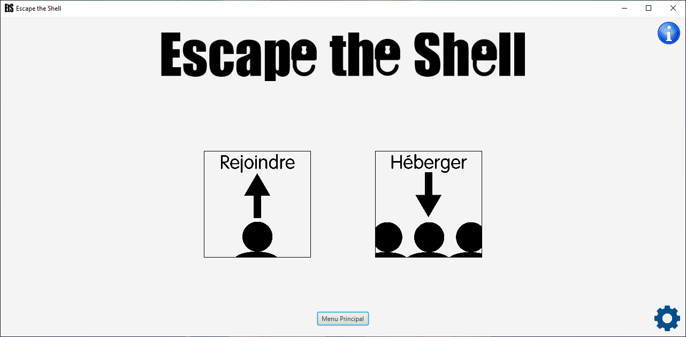
Menu multijoueur
Si vous souhaitez rejoindre une partie il vous faudra renseigner l'adresse IP du serveur et attendre le lancement du
challenge par le serveur.
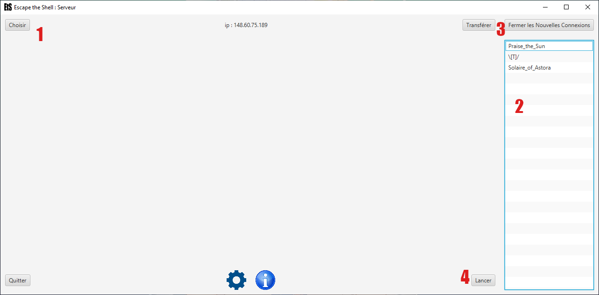
Salon du multijoueur
Si vous souhaitez héberger une partie, après avoir sélectionné le bouton correspondant appuyez sur le bouton "Choisir"(1) pour sélectionner le challenge, la liste présente à droite recense tout les joueurs présent sur le
serveur (2), une fois que tout vos joueurs sont présent, fermer l'accès (bouton fermer), partager le
challenge (3) et lancez-le (4).
Mode "Éditeur"
Le mode Éditeur vous permet de créer et modifier des challenges. Pour se faire sélectionnez un challenge ou
choisissez Créer un challenge.
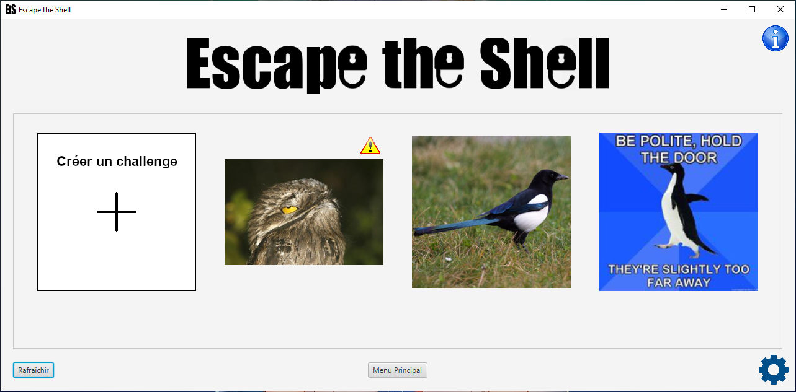
Choix de l'édition
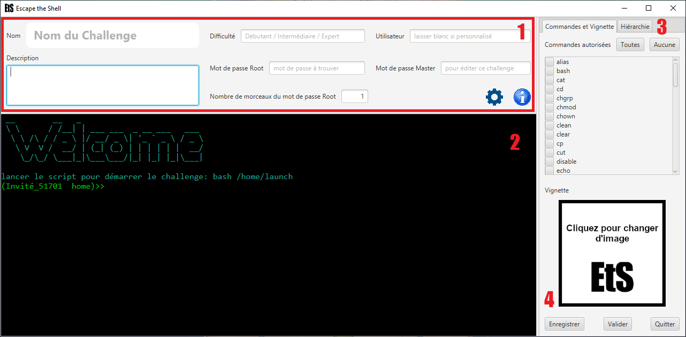
Édition du challenge
Dans le cadre supérieur (1) de l'éditeur se trouve les informations liées au challenges. Un terminal
(2) est présent pour éditer le challenge en utilisant les commandes Unix. L'onglet Hiérarchie présente
l'arborescence du système de fichier et permet de le modifier visuellement. L'onglet Commandes et Vignette
présente la liste des commandes à autorisé pour le challenge ainsi que la vignette (4) représentant le
challenge.
Pour pouvoir partager et jouer un challenge il est nécessaire de le valider, afin de valider la faisabilité du
challenge.
Pour favoriser la rejouabilité, la gestion des mots de passe permet de générer aléatoirement des mots de passe à partir d'expression régex par exemple:
[0-9]{4} : correspond à toutes les combinaisons de 4 valeurs comprises entre 0 et 9.
Pour un challenge il existe deux mots de passe, celui du Root et celui du Master. Le premier est celui à trouver lors du challenge et le second celui pour éditer le challenge.
Gameplay
Fil rouge des challenges
On joue un personnage qui a été recruté par une bande de rebelles visant à atteindre et détruire une entité du nom de "Shaper", dans le premier challenge on doit faire ses preuves auprès du groupe en montrant que l'on a les compétences nécessaires aux missions que l'on nous présentera. Dans le deuxième challenge, nous sommes envoyés pour notre première mission en compagnie d'un nouveau personnage, dans le but de récupérer des informations sur "Shaper", notamment sa localisation. Dans le troisième challenge, grâce aux informations récupérées lors de notre mission précédente nous abordons le repère du dit "Shaper", cependant la mission ne se déroule pas comme prévu.
Commandes du terminal
Lors d'une partie vous allez devoir utiliser différentes commandes pour arriver à vos fins. Elles sont nombreuses et variées, pour les connaître utiliser la commandes help, pour obtenir des informations sur une commande utiliser la commande man suivi de la commande en question.
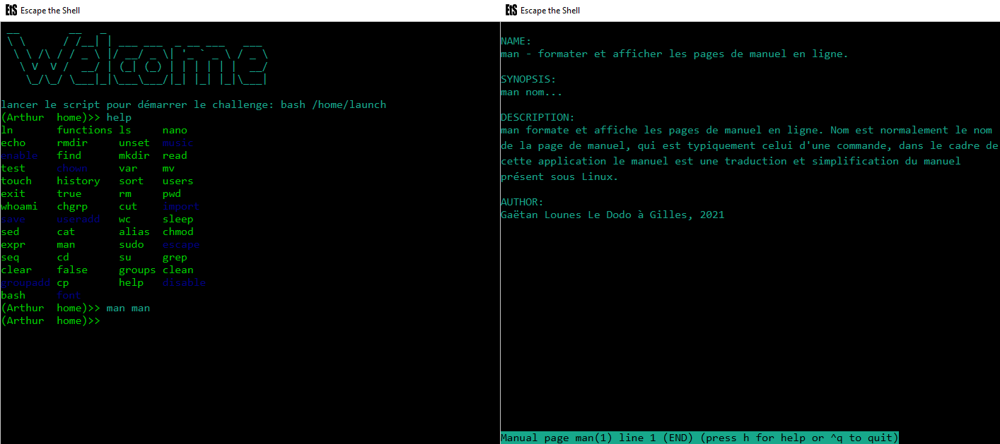
Les commandes help et man
Démonstration
Voici une petite vidéo de démonstration d'un challenge.
Techniques
En ce qui concerne l'aspect technique veuillez vous référer à cette page
Dépannage
Généralités
Le Dodo à Gilles accorde une grande importance à la qualité de ses produits. Il peut cependant arriver que vous
rencontriez des problèmes. Nous listons ici les principaux problèmes pouvant survenir.
Problèmes de connexion
Le serveur peut être configuré pour n'être disponible que sur un réseau local et ne pas être accessible via
internet. Si le problème persiste, vérifiez votre connexion au serveur. Pour cela vérifiez que votre ordinateur est
bien connecté au bon réseau, vérifiez les branchements et la connexion wifi. Au besoin, vérifiez aussi les
paramètres de votre VPN.
Support
Le Dodo à Gilles vous permet d’obtenir des informations, un support technique et bien plus directement en nous
contactant à l'adresse que vous trouverez en fin de document.
Si vous rencontrez un problème lors de l’utilisation, un service technique est là pour vous aider.
Ce support technique peut :
vous aider à configurer correctement votre machine pour lancer le logiciel
vous aider à résoudre les problèmes de compatibilité entre votre matériel et le logiciel
vous informer des éventuelles mises à jour disponibles pour ce programme.
Avant de nous contacter, assurez-vous :
d’avoir lu la documentation liée au logiciel. Vous y trouverez peut-être la réponse à votre problème en
quelques secondes.
de connaître la configuration de votre machine.
d’avoir noté les éventuels messages d’erreur apparus sur votre écran.
Pour le prix d’un mail, ce service vous présente les problèmes les plus fréquemment rencontrés, ainsi que les moyens
d’y remédier. Conçu par nos meilleurs experts, il est clair et simple d’utilisation. Si vous deviez ne trouviez pas
la réponse à votre question dans notre système expert, vous serez mis en contact avec un de nos techniciens, présent
toutes les semaines de 10h à 16h le quatrième jeudi de la semaine.
Nous contacter
Pour toute question ou remarque veuillez nous contacter à l'adresse mail suivante :
gl-dodo-a-gilles@listes.enssat.fr